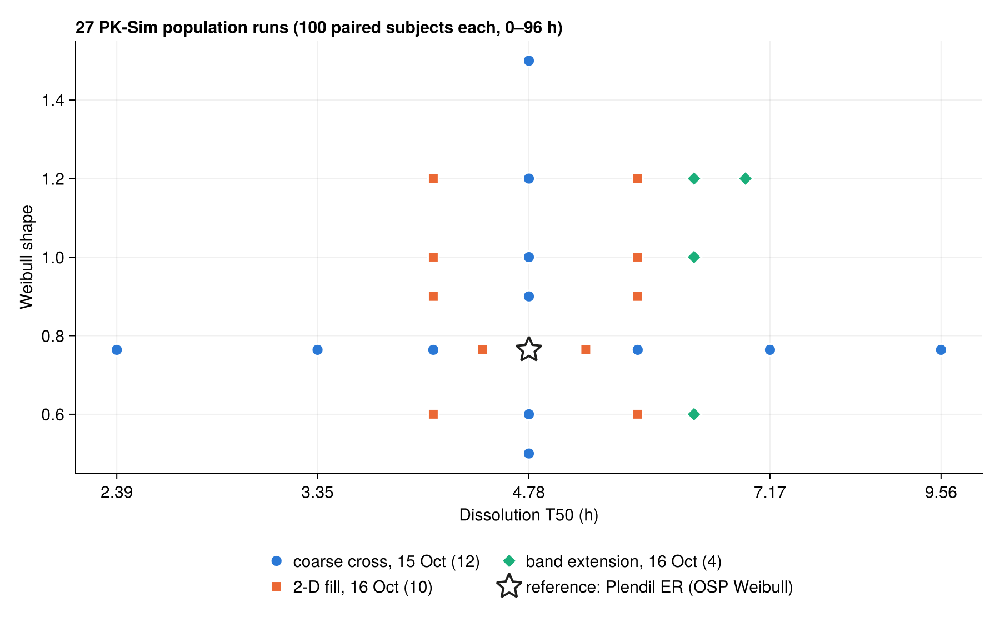
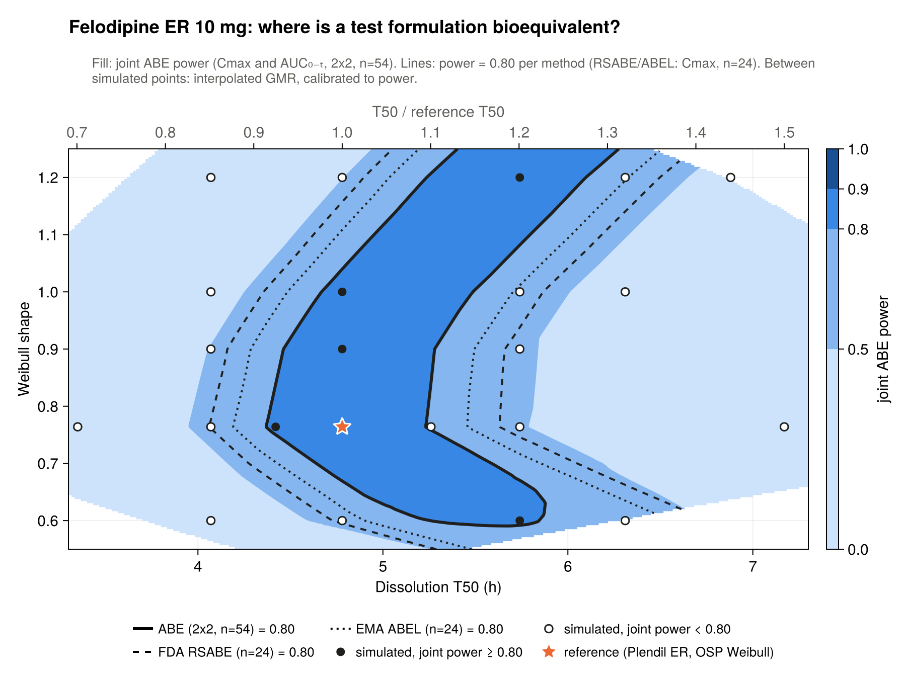
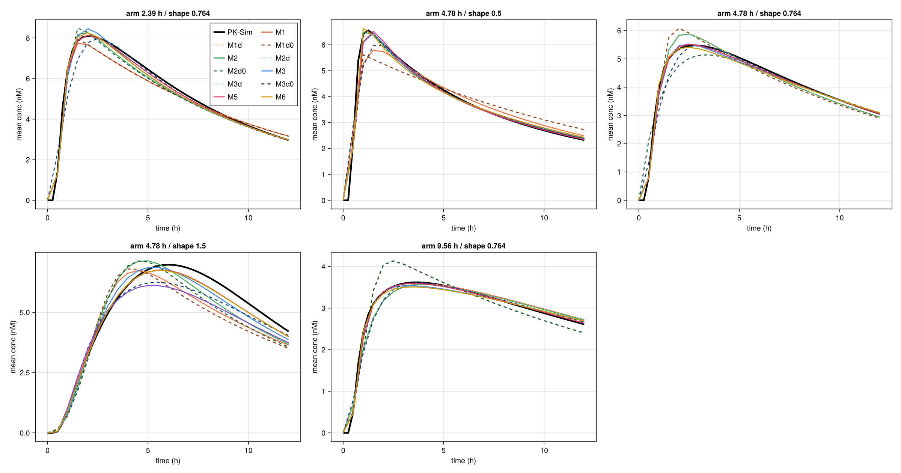
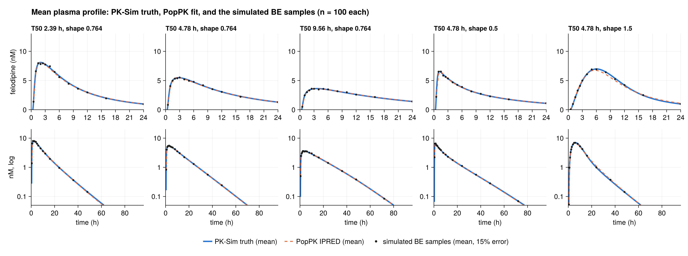
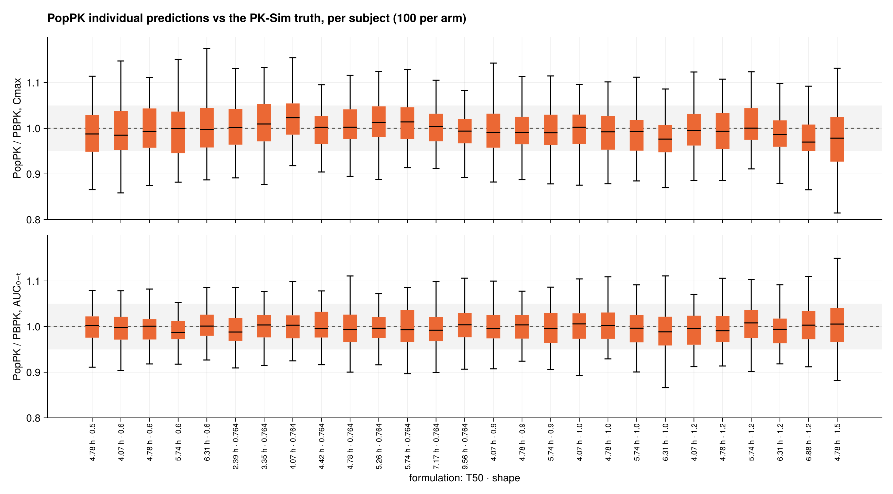
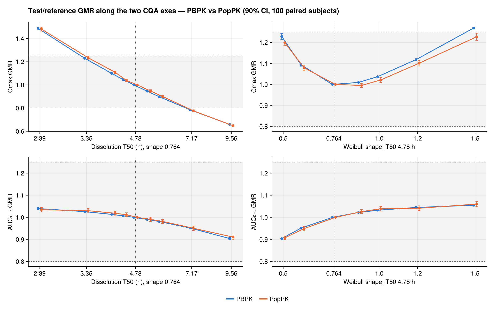
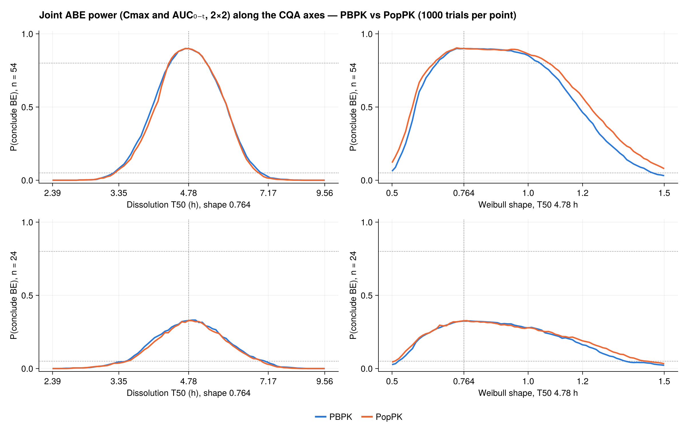
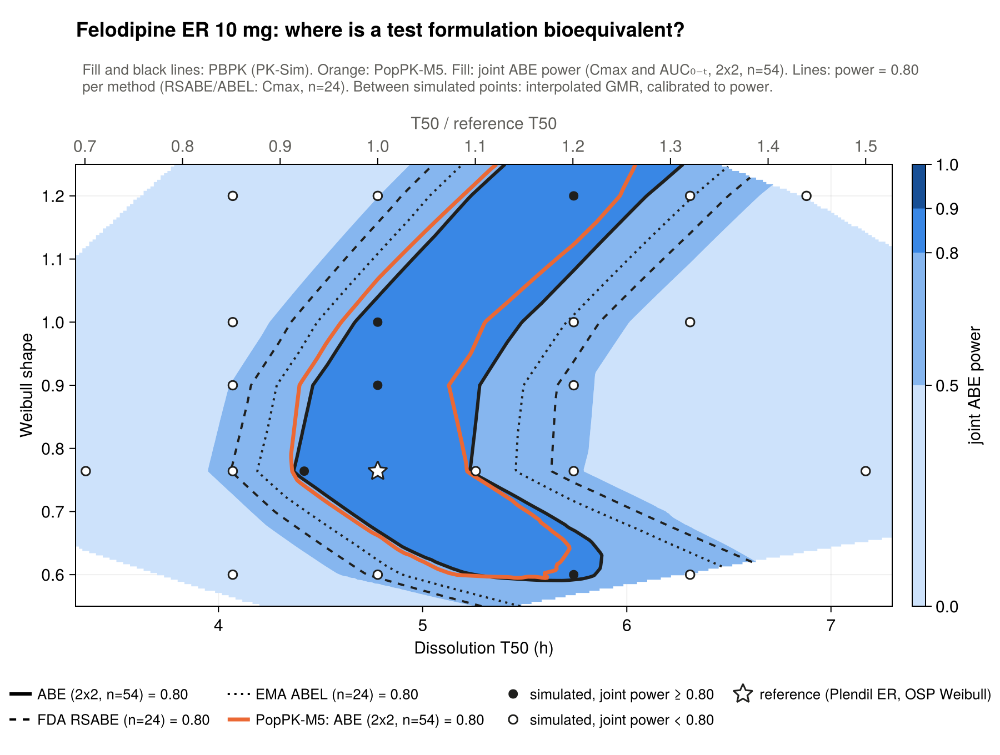
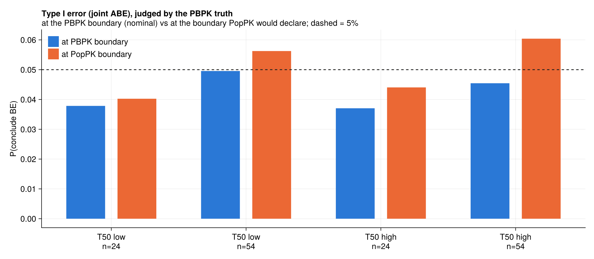

MBBE drug two · discussion · updated 25 Oct 2026
What 27 PK-Sim population runs show, how the final PopPK model reads the same data, and what is left to do.
This deck pulls together the felodipine work for discussion. First built on 16 October with the 1-compartment PopPK baseline; updated on 25 October with the final PopPK model, M5 (dual Weibull release, gut absorption, 2 compartments), on all 27 arms. The PK-Sim side is finished: no more PK-Sim runs are planned. Everything here is fasted and provisional, with the accepted Cmax bias of about 0.79 in the reference model.
Where we are
| Step | Status | Key result |
|---|---|---|
| Reference model | Done | OSP Weibull + colonic CYP3A4 50%; Cmax bias ≈ 0.79 accepted |
| T50 × shape sweep | Done | 27 formulations × 100 paired subjects, 0–96 h |
| Fed arm (gate #3) | Limitation | Model Cmax fed/fasted 0.96 vs 1.6–2.8: fasted claim only |
| Dissolution (gate #4) | Approximate | USP-consistent; Abrahamsson 1994 tablets within 1.25-fold |
| Type I error | Done | Calibrated at the boundary; RSABE/ABEL pass 20% / 13% |
| PopPK model search | Done 25 Oct | 12 structures tested; M5 final, M3 fallback |
| PBPK vs PopPK | Done 25 Oct | Agree along T50 and most of shape; shape 1.465–1.5 missed |
project notes §9 · planning notes §9–10 · model_testing_log.pdf
Fed: PK-Sim's meal event only slows stomach emptying, so the model gets the direction of the food effect wrong; scope section 6 fallback applied. Dissolution: the reference sits mid-window of the USP limits read through the Abrahamsson correlation, and three real tablets of the platform are reproduced within 1.25-fold. RSABE and ABEL figures are acceptance at a true GMR of exactly 0.80 or 1.25, n = 24. The PopPK rows replace the 16 October 1-compartment result, which agreed only near the reference shape.
What was simulated

CQAs: Weibull dissolution T50 and shape; lag fixed at 18.7 min.
Population: 100 adults, 50% female, 18–55 y, the same people in every run, so test vs reference is paired.
BE settings: Cmax and AUC₀₋ₜ; within-subject CV 35.7% and 25.3%; 2×2 with n = 54.
PK-Sim 12.2 · project Felodipine_ER_colon50 · CVs from the MHRA felodipine PAR
n = 54 is the 2x2 sample size for 80% power at a GMR of 0.95 with a Cmax CV of 35.7%. The coarse cross came first, then a 2-D fill of the box it suggested, then four runs to close the band at slow T50. Every export was checked: 100 subjects, 96 hours, and the dissolution curve back-fitted to the T50 and shape that were entered.
PBPK · fasted safe space

| Shape | T50 with joint power ≥ 0.80 |
|---|---|
| 0.6 | 5.25–5.84 h |
| 0.764 (ref) | 4.37–5.23 h (×0.91–1.09) |
| 0.9 | 4.47–5.28 h |
| 1.0 | 4.67–5.49 h |
| 1.2 | 5.24–6.10 h |
Cmax decides. It is lowest near shape 0.8, so a slower T50 can be offset by a shape further from 0.8.
felo_02 + felo_03 · output_sweep_2d/ · ABE 2×2 n = 54; RSABE/ABEL n = 24 (Cmax)
The band's edges come from interpolating the log GMR between the 27 simulated points and converting it to power with a monotone calibration curve; that reproduces the simulated power within 0.037 everywhere. The shape 0.6 row changed today from 5.20–5.98 to 5.25–5.84 h, because the joint now uses AUC 0–t rather than AUC infinity, as the sweep and the papers do. RSABE and ABEL widen the band by about 0.2–0.4 h each side.
PBPK · Type I error
| Simulated BE boundary | CQA | ABE n = 54 | ABE n = 24 | RSABE n = 24 | ABEL n = 24 |
|---|---|---|---|---|---|
| T50, fast side (GMR 1.25) | 3.25 h | 5.0% | 3.8% | 22.2% | 13.9% |
| T50, slow side (GMR 0.80) | 6.96 h | 4.5% | 3.7% | 20.2% | 12.8% |
| Shape, high side (GMR 1.25) | 1.46 | 4.9% | 3.3% | 22.0% | 13.8% |
| Shape, low side | none | — | — | — | — |
ABE (joint Cmax and AUC₀₋ₜ) sits at or just under the nominal 5%. Cmax alone gives 4.7–5.1%; the TOST control gives 5.0%.
RSABE / ABEL: a product sitting exactly on the conventional limit passes 1 study in 5, or 1 in 7. That is by design for a highly variable drug, but it is what their wider contours mean.
felo_04 · 20 000 virtual trials per cell (Monte Carlo SE ≈ 0.15 pp) · poppk/output_rich/compare/
Method as for metformin (Morris): invert the CQA to GMR relationship to find where the GMR first leaves 0.80 to 1.25, walking out from the reference, then simulate the BE acceptance rate there. On the shape axis below the reference the Cmax GMR never reaches 1.25: it is 1.23 at shape 0.5, the lowest simulated. At n = 24 the joint rate falls under 5% because AUC can also fail. The RSABE and ABEL rates are Cmax only, full replicate, CVwR 34%.
PBPK vs PopPK · the headline
The 1-compartment baseline agreed only near the reference. The final model puts the T50 limits within 0.1 h of PBPK and the shape power edges within 0.04. One gap remains: at shape 1.465–1.5 PopPK still calls BE where PBPK does not.
On 16 October the 1-compartment PopPK fits were good on average but wrong by different amounts for different formulations, so the errors did not cancel in the test to reference ratio. Twelve structures were then tested. The final model, M5, has two Weibull release components feeding a gut compartment with first-order absorption into a 2-compartment disposition model. The next slides show the model search, the fits, and the consequences for the safe space and Type I error.
PopPK · method
27 arms × 100 subjects, 0–96 h
18 samples, 0.5–96 h, 15% proportional error
M5: dual Weibull → ka → 2-cmt, FOCE
Cmax and AUC₀₋ₜ from each subject’s prediction
safe space, Type I, cross-checks
As for metformin: rich sampling, each formulation fitted on its own, and the same be_utils code on both sides.
Different: felodipine needs a gut absorption step and a two-component release. Metformin's 1-compartment structure agreed only near the reference here.
Pumas 2.8.1 · felodipine_poppk_pumas/ → Felodipine-BCSII/poppk/ · equations in model_equations/felodipine_poppk_models.pdf
M5 has 14 estimated parameters: two Weibull components with their own T50 and shape and a mixing fraction, ka, CL, Vc, Q, Vp, IIV on release time, CL and Vc, and a proportional error. Release enters through Pumas @delay, the Pumas built-in delay form, with the 0.31 h lag fixed inside the delay distribution. Each arm was fitted from one start (absorption-limited), which was never worse than the alternative on the 7 arms fitted from both; about 30 minutes per arm. The 1-compartment baseline of 16 October is kept in the model-testing log.
PopPK · model search
| Model | Structure | LL ref / shape 1.5 | GMR error | Tmax bias | Outcome |
|---|---|---|---|---|---|
| M1 | Weibull → 1-cmt | −557 / −366 | −20 to −9% | −1.5 to +0.35 h | Rejected |
| M2 | Weibull → 2-cmt | −557 / −247 | −11 to −6% | −1.2 to +0.3 h | Not identified |
| M3 | Weibull → ka → 2-cmt | −354 / −59 | −3.5 to +3.1% | −0.7 to +0.1 h | Fallback |
| M4 | M3, reference + test paired | not comparable | −12 to +15% | – | Rejected |
| M3d | M3 in @delay form, lag 0.31 h | −354 / −56 | as M3 | as M3 | Equivalent |
| M3d0 | @delay, no lag | −755 / −48 | −10 to 0% | −0.4 to +0.55 h | Lag needed |
| M3Lo | M3, lag estimated | −526 / −329 | – | – | Worse fits |
| M5 | Dual Weibull → ka → 2-cmt | −348 / +38 | −3.3 to 0% | −0.3 to +0.15 h | Final |
| M6 | Weibull → 3 transit → 2-cmt | −365 / +19 | −3.1 to +3.2% | −0.45 to 0 h | Partial fix |
5 diagnostic arms (4.78/0.764 ref, 4.78/0.5, 4.78/1.5, 2.39/0.764, 9.56/0.764) · model_testing_log.pdf
LL is the best log-likelihood from two starts; higher is better. GMR error is the model's test to reference Cmax GMR relative to PBPK's over the four non-reference diagnostic arms. Tmax bias is the median per-subject Tmax minus PK-Sim's. M1d, M2d and the no-lag M1 and M2 variants are in the log and behave like the M3 rows shown. M4 is fitted to two arms at once, so its LL cannot be compared; it failed because release rate changes where the drug is absorbed and so the gut-wall extraction, which breaks the shared-disposition assumption. Estimating the lag in the @delay form gave an infinite likelihood for shapes below 1.
PopPK · curve shape

M3 peaked 0.4–0.7 h early; at shape 1.5 only 28% of subjects were within 0.5 h of PK-Sim.
Estimating the lag did not help: it lands at about 0.3 h and the fits get worse.
M5: Tmax bias −0.3 to +0.15 h, 69% within 0.5 h at shape 1.5, mean-curve error 1.2–4.6%.
felo_08 · curve_tmax/fig_mean_curves.png · Tmax and curves against noise-free PK-Sim
The pink line is M5 and the blue line M3; black is the PK-Sim mean. Two physiological explanations were ruled out first: gut-wall extraction varying with release rate (AUC per fraction absorbed is flat within plus or minus 3 percent across the 27 arms) and a deconvolution against PK-Sim's absorbed-into-mucosa output, which was inconclusive. One release time scale and one ka cannot give both the fast initial phase and the long tail; the two-component release can. The components are descriptive, not two physical populations.
PopPK · fit

The mean prediction follows the truth at the reference, both T50 extremes and both shape extremes, including the late peak at shape 1.5.
felo_05 · output_rich_m5/diagnostics/fig_profiles.png · residual SD 0.15–0.19 across arms (true 0.15)
Blue is the mean PK-Sim truth, orange dashed the mean individual prediction, and the dots the mean of the simulated BE samples with 15 percent error. With the 1-compartment baseline the residual SD was 0.16 to 0.24 and rose with shape; with M5 it is 0.15 to 0.19, close to the true 15 percent, and the highest value is at shape 1.5.
PopPK · per subject

AUC₀₋ₜ: 0.989–1.004 across arms.
Cmax: 0.976–1.019 across arms. The 1-compartment baseline ran from 0.87 to 1.135.
The errors now cancel in test / reference: GMR error at most 3.3%, mean 1.3% (baseline: up to 20%).
felo_05 + felo_09 · output_rich_m5 · boxes = 100 subjects per arm
Each box is the per-subject ratio of the PopPK prediction to the PK-Sim value in one arm. The arm-dependent pattern of the 1-compartment model, which followed its likelihood basins, is gone. M5 is also better than the fallback M3 on every one of the 27 arms by AIC (median improvement 48), and its Cmax range is tighter than M3's 0.976 to 1.043.
PBPK vs PopPK · GMR

| Cmax GMR | PBPK | PopPK M5 |
|---|---|---|
| T50 3.35 h | 1.23 | 1.23 |
| T50 7.17 h | 0.79 | 0.78 |
| Shape 0.5 | 1.23 | 1.20 |
| Shape 1.5 | 1.27 | 1.23 |
AUC₀₋ₜ agrees within 0.01 everywhere, so Cmax carries the remaining difference.
felo_04 · output_rich_m5/compare/gmr_axes.csv · 100 paired subjects per arm
Blue is PBPK, orange PopPK M5; the grey band is 0.80 to 1.25. With the 1-compartment baseline the shape-axis GMRs were 0.98 at shape 0.5 and 1.13 at shape 1.5, so most of the Cmax rise was lost. M5 keeps the U shape. The remaining shortfall at shape 1.5, about 3 percent, matters because the PBPK GMR there is only 1.5 percent above 1.25. Refitting with two other residual-noise seeds gave 1.242 and 1.240 (original 1.227, PBPK 1.269): the shortfall is structural, 2 to 3 percent on every seed, while at shape 1.2 the seeds scatter on both sides of PBPK (1.10 to 1.14 vs 1.12).
PBPK vs PopPK · power

| n = 54 | PBPK | PopPK M5 |
|---|---|---|
| T50 axis | 4.35–5.24 h | 4.33–5.23 h |
| Shape axis | 0.67–1.04 | 0.65–1.08 |
Along T50 within 0.03 h; along shape within 0.04. The baseline was 0.16 off at low shape.
At n = 24, standard ABE still never reaches 80% (about 33% at best): this is where RSABE or ABEL is needed.
felo_04 · output_rich_m5/compare/power_joint_axes.csv · 1 000 virtual trials per point
The power curves are joint ABE, Cmax and AUC 0-t, 2 by 2 crossover, linearly interpolated between the simulated formulations. The 1-compartment baseline stayed above 80 percent down to shape 0.51, where the PBPK truth was already below 10 percent; M5's low-shape edge is 0.65 against PBPK's 0.67. The high-shape edge is 0.04 generous, the same direction as the shape-1.5 GMR shortfall.
PBPK vs PopPK · 2-D safe space

| Shape | PBPK | PopPK M5 |
|---|---|---|
| 0.6 | 5.25–5.84 h | 5.16–5.59 h |
| 0.764 | 4.37–5.23 h | 4.37–5.22 h |
| 0.9 | 4.47–5.28 h | 4.40–5.13 h |
| 1.0 | 4.67–5.49 h | 4.61–5.31 h |
| 1.2 | 5.24–6.10 h | 5.20–5.97 h |
Within 0.25 h everywhere; M5 sits on average 0.09 h faster. At shape 0.6 the baseline was 1.3 h off.
felo_03 overlay mode · PopPK endpoints run through the same felo_02 sweep · joint ABE, n = 54
The PopPK endpoints were written out in PK-Sim's format and run through exactly the same sweep and surface scripts as the PBPK side. M5's band edges sit slightly fast because it over-predicts the reference-arm Cmax by 0.9 percent while its test arms are nearly unbiased, so its test to reference GMRs read about 1.5 percent low at shape 0.9 and above. The fallback M3 lands about as close on average (0.08 h), partly because its reference and test errors cancel. Either model leaves the decisions unchanged near the reference.
PBPK vs PopPK · Type I error
| Boundary | PBPK | PopPK M5 | True GMR there | Truth passes there |
|---|---|---|---|---|
| T50, fast (1.25) | 3.25 h | 3.27 h (+0.7%) | 1.245 | 5.6% |
| T50, slow (0.80) | 6.96 h | 6.86 h (−1.4%) | 0.807 | 6.0% |
| Shape, high (1.25) | 1.46 | not reached | — | — |

Fast side: the baseline's inflation is gone (it put the edge where the true GMR was 1.37).
Shape side: PopPK still calls shapes 1.465–1.5 bioequivalent.
felo_04 · output_rich_m5/compare/type1.csv · joint ABE, n = 54 (n = 24: 4.0% and 4.4%) · 20 000 trials per cell
Each method is calibrated at its own boundary: 3.7 to 5.1 percent. With M5 the PBPK truth passes 5.6 percent of trials at PopPK's fast edge and 6.0 percent at the slow edge with n = 54, a small excess over the nominal 5 percent; for Cmax alone it is 5.8 and 6.3 percent. The fallback M3 gave 10.1 percent on the fast side. On the shape axis neither M5 nor M3 reaches a GMR of 1.25 within the tested range, because both under-predict the shape-1.5 Cmax GMR by 2 to 3 percent, which held on three residual-noise seeds.
Two drugs side by side
| Rich sampling, per-arm PopPK | Metformin XR | Felodipine ER (M5) |
|---|---|---|
| Structure needed | Weibull → 1 compartment | Dual Weibull → ka → 2 compartments |
| Fitted release vs CQA | Followed T50 | Descriptive; T50 offset about 2× |
| 80% power edges | Within 0.05–0.15 h | Within 0.03 h (T50), 0.04 (shape) |
| GMR boundary error | −1% slow, −7% fast | −1.4% slow, +0.7% fast |
| Truth passes at PopPK’s slow edge | 8–10% | 6.0% |
| Verdict | Same decisions | Same decisions except shape 1.465–1.5 |
The message becomes: agreement on the decision needs a structurally adequate PopPK model; with one, felodipine agrees as closely as metformin.
Metformin: metformin_poppk_weibull_export_edited/output (rich, per-arm) · n = 48/86 metformin, n = 54 felodipine
Metformin numbers are the stored rich per-arm results: boundaries within minus 1.1 and minus 6.8 percent, and the PBPK truth passing 8 to 10 percent of trials at the PopPK slow-side boundary. On 16 October, with the 1-compartment model, felodipine was minus 7 and minus 15 percent with 16 percent at the slow edge. The M5 release parameters do not map onto the PK-Sim T50: the PopPK input lumps release, gut transit and absorption, so its 50 percent release time is about 8 to 9 hours where PK-Sim uses 4 to 5. The endpoints are right; the parameters are not physiological.
Supporting checks
Model Cmax fed / fasted 0.96; Plendil observed 1.6–2.8. The claim is fasted. Fed variability alone (CV 36.5%, n = 56) leaves the band unchanged.
USP Test 1 read through the Abrahamsson correlation allows an in-vivo MDT of 4.5–12.9 h. The reference is 9.4 h; the BE band is only 8.6–10.2 h.
Abrahamsson 1994 tablets A, B, C: model peaks 11.4 / 4.8 / 2.1 nM vs 9.5 / 5.0 / 2.3 nM observed. The fast-side band edge is conservative.
reference/fed-arm-literature.md · reference/dissolution-link-literature.md · output_tablets1994/
Fed: PK-Sim's meal event only slows stomach emptying, while real felodipine ER empties from the upper stomach in bursts, so the model gets the direction wrong; the scope's fallback applies. Dissolution: the USP window is about five times wider than the BE band in in-vivo terms. Tablets: the model's Cmax sensitivity to release rate is right within 6 percent on the slow side and about 25 percent too strong on the fast side.
Plan · no new PK-Sim runs needed
| Step | Why | Effort |
|---|---|---|
| 1. Shape-edge check | Shape-1.5 GMR shortfall: structural, 2 to 3% low on three noise seeds | done |
| 2. NCA on the sampled data | Model-free comparator: is it the model or the sampling? | 0.5 d |
| 3. Sparse sampling (6 samples) | Same test as the metformin sparse-sampling run, now with M5 | 1 d |
| 4. Write-up | Felodipine write-up; methods and figures | 2–3 d |
| 5. Small literature items | Colon / SI CYP3A4 ratio citation; Blychert 1990 tablets | 0.5 d |
| 6. Joint PopPK (optional) | T50 and shape as covariates; pairing two arms (M4) failed | 1 d+ |
Done since 16 Oct: richer absorption model (12 structures, M5 final, M3 fallback) and the full BE comparison rerun on all 27 arms.
Steps 2–3 reuse the existing PK-Sim outputs and pipeline · M5 fits take about 30 min per arm
The richer absorption model answered the question the 16 October result raised: the PBPK versus PopPK divergence was a property of the one-compartment model, not of PopPK as a method. The shape-edge check refitted M5 on the reference, shape 1.2 and shape 1.5 arms with two other residual-noise seeds: the shape-1.5 Cmax GMR came out 1.227, 1.242 and 1.240 against PBPK 1.269, so the shortfall is structural, not noise. Sparse sampling is the next real test: with 6 samples per subject the two release components may no longer be identifiable, in which case M3 is the fallback.
For discussion
Deck built 16 Oct 2026, updated 25 Oct · project notes §9.19–9.30
Question 2 matters for interpretation: M5 gives the closest decisions but its two release components are descriptive, while M3 has a simpler and more interpretable release with slightly larger errors. Question 3: extending past shape 1.5 would need new PK-Sim runs, which the plan otherwise avoids. The RSABE and ABEL acceptance of about 20 and 13 percent at the conventional limits is unchanged and should still be stated plainly next to the wider contours.